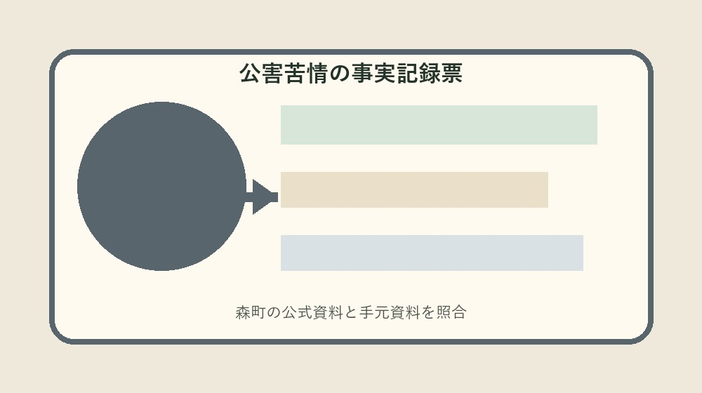
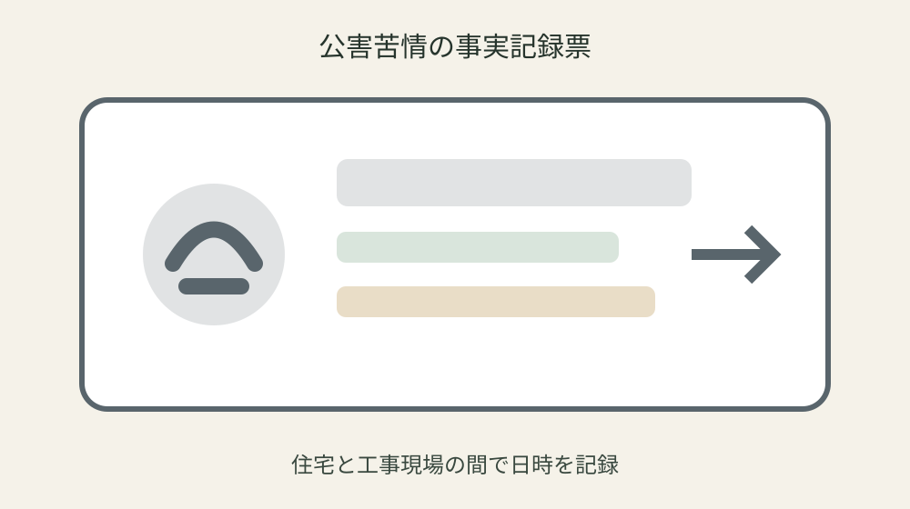
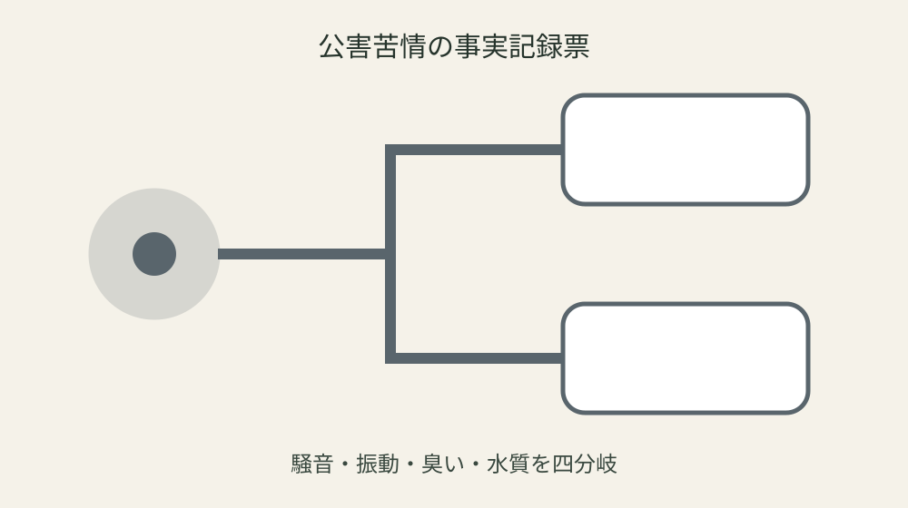

森町の公害苦情相談｜騒音・振動・悪臭・水質を日時と場所で記録する

結論：公害苦情事実記録へ対象・基準日・手元資料・未確認事項を分け、最初の一問だけを森町へ確認します。森町は公害に関する苦情相談を受け付けるを起点に、実行直前の再確認までを一続きにしてください。
現象を騒音・振動・臭い等に分ける
現象を騒音・振動・臭い等に分けるでは、まず「森町は公害に関する苦情相談を受け付ける」という森町公式の条件を起点にします。公害苦情事実記録には対象、日付、資料名、確認日を別欄で置き、制度名だけのメモにしません。手元の現物と公式説明が食い違う場合は、都合のよい方へ寄せず、差がある状態をそのまま残します。
実際の確認は、現物を見る人、電話する人、記録する人を決めてから始めます。悪臭は風向や継続時間も状況整理に役立つも同じ行へ書き、危険な発生源へ近づくことを避けます。数字や固有名は読み上げて照合し、不明欄には推定値ではなく「未確認」と次の確認先を記します。 この判断も公害苦情事実記録の更新対象です。
森町へ尋ねるときは「現象を騒音・振動・臭い等に分けるについて、手元ではここまで確認した」と一文で伝えます。そのうえで特定建設作業の騒音・振動は法令等で規制が自分の案件にどう当てはまるかを一問だけ確認します。回答日、担当部署、再確認が必要な時期まで記録すれば、家族や同僚が同じ質問を繰り返さずに済みます。 この判断も公害苦情事実記録の更新対象です。
公害苦情事実記録の更新では旧版を消しません。特定施設には規制基準の遵守義務があるを採用した根拠、変更前の記載、変更した日を並べます。公式ページの更新や個別事情で結論が変わることがあるため、実行直前に最新案内を見直し、確認できない場合は作業を一段止めます。
最初に気づいた日時を固定する
最初に気づいた日時を固定するでは、まず「相談対象には大気汚染・水質汚濁等がある」という森町公式の条件を起点にします。公害苦情事実記録には対象、日付、資料名、確認日を別欄で置き、制度名だけのメモにしません。手元の現物と公式説明が食い違う場合は、都合のよい方へ寄せず、差がある状態をそのまま残します。
実際の確認は、現物を見る人、電話する人、記録する人を決めてから始めます。原因者が不明でも分かる範囲を伝えるも同じ行へ書き、推測した原因者を事実として書くことを避けます。数字や固有名は読み上げて照合し、不明欄には推定値ではなく「未確認」と次の確認先を記します。 この判断も公害苦情事実記録の更新対象です。
森町へ尋ねるときは「最初に気づいた日時を固定するについて、手元ではここまで確認した」と一文で伝えます。そのうえで工事前に期間・時間・方法を周辺へ知らせる必要があるが自分の案件にどう当てはまるかを一問だけ確認します。回答日、担当部署、再確認が必要な時期まで記録すれば、家族や同僚が同じ質問を繰り返さずに済みます。 この判断も公害苦情事実記録の更新対象です。
公害苦情事実記録の更新では旧版を消しません。町の相談と民事上の解決は同じではないを採用した根拠、変更前の記載、変更した日を並べます。公式ページの更新や個別事情で結論が変わることがあるため、実行直前に最新案内を見直し、確認できない場合は作業を一段止めます。
発生場所と自宅位置を地図に置く
発生場所と自宅位置を地図に置くでは、まず「騒音や振動は発生日時と場所が重要」という森町公式の条件を起点にします。公害苦情事実記録には対象、日付、資料名、確認日を別欄で置き、制度名だけのメモにしません。手元の現物と公式説明が食い違う場合は、都合のよい方へ寄せず、差がある状態をそのまま残します。
実際の確認は、現物を見る人、電話する人、記録する人を決めてから始めます。特定建設作業は事前届出が必要も同じ行へ書き、一度の測定値だけで法令違反を断定することを避けます。数字や固有名は読み上げて照合し、不明欄には推定値ではなく「未確認」と次の確認先を記します。 この判断も公害苦情事実記録の更新対象です。
森町へ尋ねるときは「発生場所と自宅位置を地図に置くについて、手元ではここまで確認した」と一文で伝えます。そのうえで特定施設を有する工場等は届出義務があるが自分の案件にどう当てはまるかを一問だけ確認します。回答日、担当部署、再確認が必要な時期まで記録すれば、家族や同僚が同じ質問を繰り返さずに済みます。 この判断も公害苦情事実記録の更新対象です。
公害苦情事実記録の更新では旧版を消しません。生命・身体の差し迫った危険は緊急機関へ連絡するを採用した根拠、変更前の記載、変更した日を並べます。公式ページの更新や個別事情で結論が変わることがあるため、実行直前に最新案内を見直し、確認できない場合は作業を一段止めます。
継続時間と頻度を記録する
継続時間と頻度を記録するでは、まず「悪臭は風向や継続時間も状況整理に役立つ」という森町公式の条件を起点にします。公害苦情事実記録には対象、日付、資料名、確認日を別欄で置き、制度名だけのメモにしません。手元の現物と公式説明が食い違う場合は、都合のよい方へ寄せず、差がある状態をそのまま残します。
実際の確認は、現物を見る人、電話する人、記録する人を決めてから始めます。特定建設作業の騒音・振動は法令等で規制も同じ行へ書き、危険な発生源へ近づくことを避けます。数字や固有名は読み上げて照合し、不明欄には推定値ではなく「未確認」と次の確認先を記します。 この判断も公害苦情事実記録の更新対象です。
森町へ尋ねるときは「継続時間と頻度を記録するについて、手元ではここまで確認した」と一文で伝えます。そのうえで特定施設には規制基準の遵守義務があるが自分の案件にどう当てはまるかを一問だけ確認します。回答日、担当部署、再確認が必要な時期まで記録すれば、家族や同僚が同じ質問を繰り返さずに済みます。 この判断も公害苦情事実記録の更新対象です。
公害苦情事実記録の更新では旧版を消しません。森町は公害に関する苦情相談を受け付けるを採用した根拠、変更前の記載、変更した日を並べます。公式ページの更新や個別事情で結論が変わることがあるため、実行直前に最新案内を見直し、確認できない場合は作業を一段止めます。

天候・風向・窓の開閉を添える
天候・風向・窓の開閉を添えるでは、まず「原因者が不明でも分かる範囲を伝える」という森町公式の条件を起点にします。公害苦情事実記録には対象、日付、資料名、確認日を別欄で置き、制度名だけのメモにしません。手元の現物と公式説明が食い違う場合は、都合のよい方へ寄せず、差がある状態をそのまま残します。
実際の確認は、現物を見る人、電話する人、記録する人を決めてから始めます。工事前に期間・時間・方法を周辺へ知らせる必要があるも同じ行へ書き、推測した原因者を事実として書くことを避けます。数字や固有名は読み上げて照合し、不明欄には推定値ではなく「未確認」と次の確認先を記します。 この判断も公害苦情事実記録の更新対象です。
森町へ尋ねるときは「天候・風向・窓の開閉を添えるについて、手元ではここまで確認した」と一文で伝えます。そのうえで町の相談と民事上の解決は同じではないが自分の案件にどう当てはまるかを一問だけ確認します。回答日、担当部署、再確認が必要な時期まで記録すれば、家族や同僚が同じ質問を繰り返さずに済みます。 この判断も公害苦情事実記録の更新対象です。
公害苦情事実記録の更新では旧版を消しません。相談対象には大気汚染・水質汚濁等があるを採用した根拠、変更前の記載、変更した日を並べます。公式ページの更新や個別事情で結論が変わることがあるため、実行直前に最新案内を見直し、確認できない場合は作業を一段止めます。
写真や録音の撮影場所を残す
写真や録音の撮影場所を残すでは、まず「特定建設作業は事前届出が必要」という森町公式の条件を起点にします。公害苦情事実記録には対象、日付、資料名、確認日を別欄で置き、制度名だけのメモにしません。手元の現物と公式説明が食い違う場合は、都合のよい方へ寄せず、差がある状態をそのまま残します。
実際の確認は、現物を見る人、電話する人、記録する人を決めてから始めます。特定施設を有する工場等は届出義務があるも同じ行へ書き、一度の測定値だけで法令違反を断定することを避けます。数字や固有名は読み上げて照合し、不明欄には推定値ではなく「未確認」と次の確認先を記します。 この判断も公害苦情事実記録の更新対象です。
森町へ尋ねるときは「写真や録音の撮影場所を残すについて、手元ではここまで確認した」と一文で伝えます。そのうえで生命・身体の差し迫った危険は緊急機関へ連絡するが自分の案件にどう当てはまるかを一問だけ確認します。回答日、担当部署、再確認が必要な時期まで記録すれば、家族や同僚が同じ質問を繰り返さずに済みます。 この判断も公害苦情事実記録の更新対象です。
公害苦情事実記録の更新では旧版を消しません。騒音や振動は発生日時と場所が重要を採用した根拠、変更前の記載、変更した日を並べます。公式ページの更新や個別事情で結論が変わることがあるため、実行直前に最新案内を見直し、確認できない場合は作業を一段止めます。
推測と目視した事実を分ける
推測と目視した事実を分けるでは、まず「特定建設作業の騒音・振動は法令等で規制」という森町公式の条件を起点にします。公害苦情事実記録には対象、日付、資料名、確認日を別欄で置き、制度名だけのメモにしません。手元の現物と公式説明が食い違う場合は、都合のよい方へ寄せず、差がある状態をそのまま残します。
実際の確認は、現物を見る人、電話する人、記録する人を決めてから始めます。特定施設には規制基準の遵守義務があるも同じ行へ書き、危険な発生源へ近づくことを避けます。数字や固有名は読み上げて照合し、不明欄には推定値ではなく「未確認」と次の確認先を記します。 この判断も公害苦情事実記録の更新対象です。
森町へ尋ねるときは「推測と目視した事実を分けるについて、手元ではここまで確認した」と一文で伝えます。そのうえで森町は公害に関する苦情相談を受け付けるが自分の案件にどう当てはまるかを一問だけ確認します。回答日、担当部署、再確認が必要な時期まで記録すれば、家族や同僚が同じ質問を繰り返さずに済みます。 この判断も公害苦情事実記録の更新対象です。
公害苦情事実記録の更新では旧版を消しません。悪臭は風向や継続時間も状況整理に役立つを採用した根拠、変更前の記載、変更した日を並べます。公式ページの更新や個別事情で結論が変わることがあるため、実行直前に最新案内を見直し、確認できない場合は作業を一段止めます。

相談日・担当・次の確認を引き継ぐ
相談日・担当・次の確認を引き継ぐでは、まず「工事前に期間・時間・方法を周辺へ知らせる必要がある」という森町公式の条件を起点にします。公害苦情事実記録には対象、日付、資料名、確認日を別欄で置き、制度名だけのメモにしません。手元の現物と公式説明が食い違う場合は、都合のよい方へ寄せず、差がある状態をそのまま残します。
実際の確認は、現物を見る人、電話する人、記録する人を決めてから始めます。町の相談と民事上の解決は同じではないも同じ行へ書き、推測した原因者を事実として書くことを避けます。数字や固有名は読み上げて照合し、不明欄には推定値ではなく「未確認」と次の確認先を記します。 この判断も公害苦情事実記録の更新対象です。
森町へ尋ねるときは「相談日・担当・次の確認を引き継ぐについて、手元ではここまで確認した」と一文で伝えます。そのうえで相談対象には大気汚染・水質汚濁等があるが自分の案件にどう当てはまるかを一問だけ確認します。回答日、担当部署、再確認が必要な時期まで記録すれば、家族や同僚が同じ質問を繰り返さずに済みます。 この判断も公害苦情事実記録の更新対象です。
公害苦情事実記録の更新では旧版を消しません。原因者が不明でも分かる範囲を伝えるを採用した根拠、変更前の記載、変更した日を並べます。公式ページの更新や個別事情で結論が変わることがあるため、実行直前に最新案内を見直し、確認できない場合は作業を一段止めます。
良い点
公害苦情事実記録に確認済み事実と未確認事項を分けると、制度の対象外を恐れて何もしない状態から、次の一問を決める状態へ進めます。
騒音や振動は発生日時と場所が重要という具体条件を家族で共有でき、担当が替わっても根拠をたどれます。
期限、現物、回答日が一枚に集まり、書類の取り直しと問い合わせの重複を減らせます。
公式資料だけで断定できない個別条件を未確認として残せることも、この方法の利点です。
注文したい点
森町の案内には制度条件が整理されていますが、初めて手続きをする人には、個別案件の順番が読み取りにくい部分があります。
危険な発生源へ近づくことを避けるため、記入例や受付後の流れも同じページから確認できるとさらに使いやすくなります。
年度更新時には変更箇所と変更日が目立つ表示になると、保存した旧資料との取り違えを減らせます。
これは現行制度の否定ではなく、利用者が正しい窓口へ一度で到達するための改善要望です。
対案・結論
結論は、公害苦情事実記録を今日一枚作り、最初の未確認欄だけを森町へ尋ねることです。
全条件を一度に覚えず、公式事実、手元資料、窓口回答、次の期限を四列に分けます。
原因者が不明でも分かる範囲を伝えるを確認しても、個別可否は案件ごとに変わり得るため、支出や申請の直前に再確認します。
確認が終わったら旧版を残し、次回の担当が同じ根拠から続けられる状態を完成とします。
大石の視点
ここまでの制度条件は森町公式資料から確認した事実です。以下は私、大石浩之の実務提案であり、森町の公式見解ではありません。
私は公害苦情事実記録を紙一枚から始め、原本を動かさず、写真や写しへ番号を付ける方法を勧めます。
未確認欄は失敗ではありません。確認先と期限のある空欄は、根拠のない推測より実用的です。
個人情報を含む場合は内部保管版と提出版を分け、必要な範囲だけを相手へ渡してください。
よくある質問
公害苦情事実記録は何から始めますか。
対象者または対象物、基準日、手元資料を一行にし、最初の公式条件「森町は公害に関する苦情相談を受け付ける」と照合します。
資料が足りなくても公害苦情事実記録を作れますか。
作れます。不足欄を推測で埋めず、必要資料、確認先、期限を書けば、後から安全に再開できます。
公式ページを一度保存すれば十分ですか。
十分ではありません。相談対象には大気汚染・水質汚濁等があるなどの条件は更新される場合があるため、実行直前に現行ページを確認します。
家族や担当者へ渡すとき何を添えますか。
確認済み事実、未確認事項、次の担当、期限、原本保管場所、町へ尋ねた日と回答を添えます。
公式情報源
- 公害関連法に係る届出（2026年8月20日確認）
- 公害に関する苦情相談（2026年8月20日確認）

最終確認日：2026-08-20 ／ 公表事実と執筆者の解釈・意見を分けて記載しています。